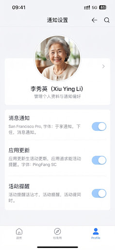

iOS 推送
等待真机 App 登记 APNs token。

通知设置
正在读取站内消息、推送 token 和最近投递记录。
通知链路
本地和云端会先保证站内消息可见，iOS 真机阶段再接 APNs。
打开中
-投递记录
-iOS Token
-显示当前家庭最近生成的关怀和测试消息。
显示通知服务写入的真实投递状态。
云端部署和 iOS App 阶段接入，不让普通用户配置底层 API。
等待真机 App 登记 APNs token。
陪伴页读取老人资料中的电话，点击后走系统拨号。
这里验证的是产品通知闭环：关怀任务生成消息，通知服务记录投递，首页和陪伴页展示。APNs 证书和真机 token 接入后，状态会从站内/模拟转为真实推送队列。